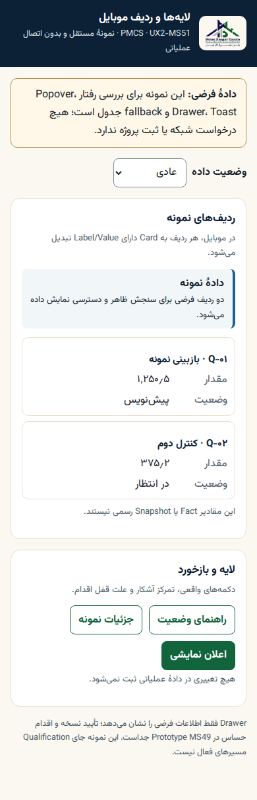
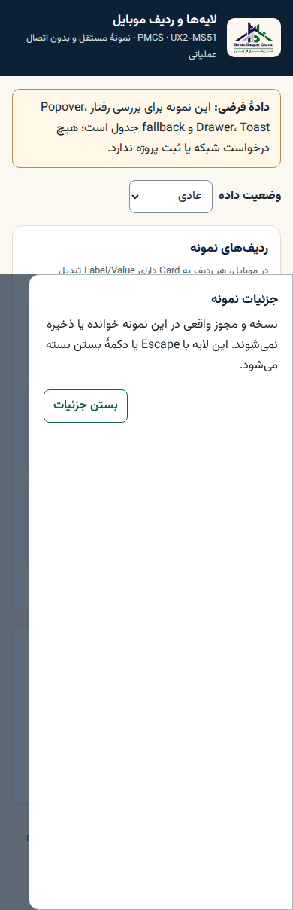
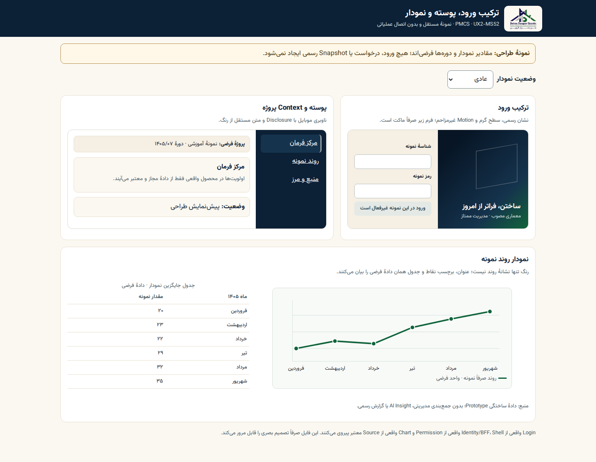
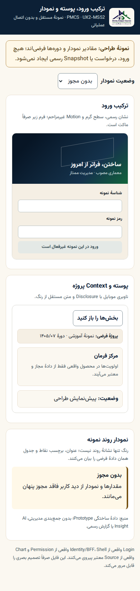

VX-G4 یا Qualification VX-G5 نیست.ترتیب مرور
- چهار شاهد UI فعال را در میز MS50 با طرحها مقایسه کنید.
- قابهای همین صفحه را در اندازهٔ اصلی باز کنید؛ تعامل را در Prototypeها بیازمایید.
- هر معیار پایین را با «تأیید / اصلاح / نیاز به شاهد» و مورد دقیق پاسخ دهید.
نمونههای تعاملی و قرارداد
وضعیت فعال و Foundation
ده تصویر منبعدار MS50 در مخزن، بدون تکثیر یا ویرایش؛ چهار قاب کلیدی اینجا کنار نمونههای جدید آمدهاند. سایر قابها و سند منشأ در میز MS50 هستند.

ورود فعلی
مرجع واقعی برای مقایسه با ترکیب پیشنهادی.

ناوبری فعلی موبایل
جایگزین هنوز در محصول مهاجرت نکرده است.

گزارش فعلی
Permission و وضعیت درخواست را با Prototype بسنجید.

تأیید نسخه
Focus، Escape و قفل Action را تعاملی بررسی کنید.
Overlay و ردیف موبایل
دو قاب دستنخورده از Artifact MS51؛ حالتهای دیگر و رفتار Keyboard در نمونهٔ تعاملی.


ردیف پیشفرض
Action و متن وضعیت در عرض محدود.


Drawer
تمرکز، خروج و برگشت به محرک.
ترکیب Login / Shell / Chart
دو قاب و PDF A4 یکصفحهای از Artifact MS52؛ Chart فقط دادهٔ فرضی و جدول جایگزین همان شش مقدار دارد.


ترکیب دسکتاپ
هویت، سلسلهمراتب و جدول جایگزین نمودار.


مرز مجوز موبایل
نمودار و جدول هر دو در نبود مجوز پنهاناند.
معیار تصمیم مالک
- هویت و خوانایی: آیا ترکیب Login، Shell و خانوادههای سناریو با برند تأییدشده، جهت «مدیریت ممتاز» و وزیرمتن
2.0.0در RTL/موبایل سازگارند؟ - حقیقت State: آیا NoData، Loading، Error، Permission، Offline و Conflict داده یا امکان اقدامِ ساختگی نشان نمیدهند؟ Chart باید جدول جایگزین همارز داشته باشد.
- تعامل: آیا ناوبری موبایل، Dialog، Popover، Drawer و Toast برای Focus/Keyboard/بازگشت و اقدام مسدود قابل فهماند؟
- چاپ و تراکم: آیا PDF A4، گزارش و مرکز فرمان در خوانایی و تمایز دادهٔ واقعی از نمونه قابل قبولاند؟ Golden/Qualification چاپ تولیدی جدا میماند.
برای هر مورد، نتیجهٔ «تأیید»، «اصلاح با مثال دقیق» یا «شاهد بیشتر» و اولویت را ثبت کنید. وضعیت ماتریس Component همچنان S/P/G دارد؛ اگر برای VX-G3 شاهد یا اصلاح تکمیلی لازم است، Gate باز میماند. فقط پس از تصمیم صریح مالک و بستن شکافهای شرط Gate، مهاجرت فعال VX-G4 آغاز میشود؛ VX-G5 Accessibility/Responsive/cross-browser/Print/Performance مستقل است.
منشأ و SHA/حجم/ابعاد: manifest MS53 و manifest MS50. Chat فقط گروه پروژه؛ بدون دادهٔ عملیاتی، UAT یا مجوز انتشار.